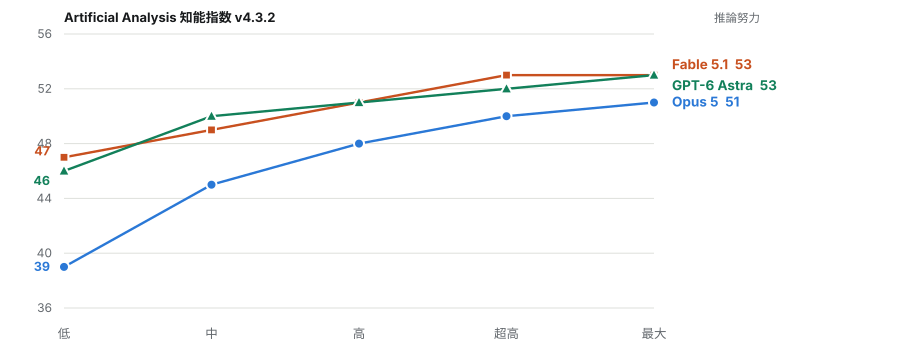
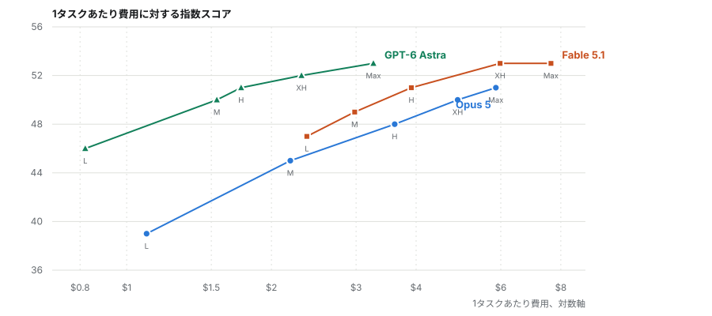
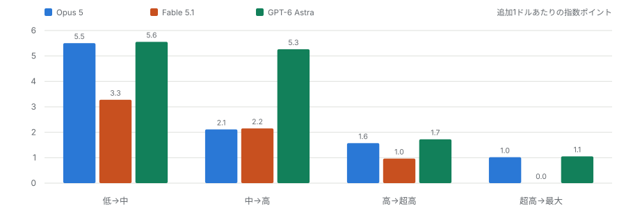
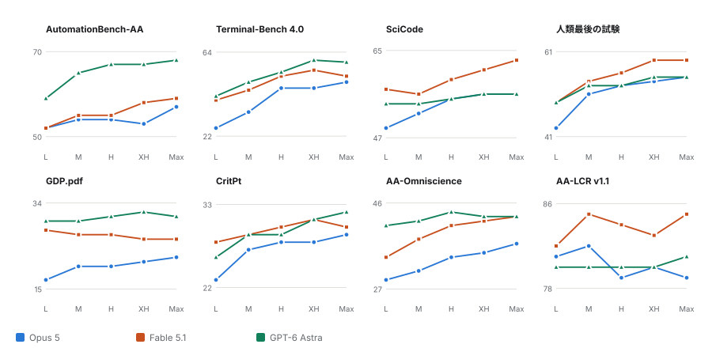
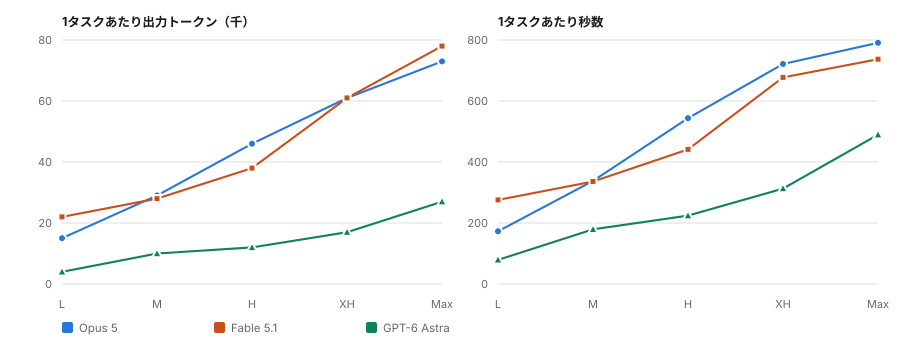
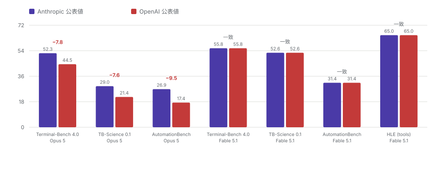

ベンチマーク分析 / 2026年9月21日
エフォートのつまみは、費用より先に効き目が尽きる
三つのフロンティアモデルはいずれも同じ 5 段階のエフォート階梯を公開しており、Artificial Analysis がその全段を実測した。そこから二つのことが出てくる。階梯の最上段はほとんど無価値である。最後の一段が買うのは指数で 0 から 1 ポイントにすぎず、その代わりに 1 タスクあたり最大 1.65 ドルを余計に払う。そして三つのモデルがともに到達できるスコアにおいて、費用はまったく同じではない。GPT-6 Astra は Fable 5.1 の最高スコアに、その 43 パーセントの金額で到達する。ここでは両方の軸を検討し、どの順位付けよりも確かだと考えている一つの発見を述べる。
この記事が置き換えたもの
このページの以前の版は Fable 5.1 と GPT-6 Astra の比較のみを扱っていた。その後 Claude Opus 5 が同じ 評価者によって同じ階梯で実測されたため、重複する二本目を公開するのではなく、三モデル比較として書き直した。 Fable 5.1 の数値は変わっていないが、結論は変わっている。Opus 5 のエフォート曲線が三つの中で群を抜いて急で あり、それがエフォートのつまみの見え方を変えるからである。
指数のバージョンについて
Artificial Analysis は知能指数を改版するが、公開記事では尺度のバージョンを明示しない。同社自身の Fable 5.1 発表記事は最大エフォートで 66、Opus 5 で 63 と報じている。現行のリーダーボードは v4.3.2 の下で 53 と 51 である。これは不一致ではなく、別の尺度である。本稿では三モデルすべてが載っている v4.3.2 を通して 用いた。いま 66 を引用している文章は、すでに引退した尺度を引用している。
第一節つまみが実際に制御しているもの
エフォートは品質のつまみではない。熟慮に充ててよい予算であり、三社はその使い方がかなり異なる。 5 段階を通じて、Opus 5 は 1 タスクあたりの推論トークンを 7000 から 4 万 3000 へ、Fable 5.1 は 8000 から 4 万 7000 へ動かす。Astra は 1000 未満から 1 万 7000 である。最後の数字を覚えておきたい。最も潤沢な設定に おいてなお、Astra は Anthropic 勢が最大設定で費やすトークンの三分の一ほどで考えている。
読者が知りたいのは、その追加の思考が結果として回収されるかどうかである。階梯の大部分では回収される。 頂上では、されない。
第二節曲線と、それが平坦になる地点
三本の曲線は形が本当に異なり、その形は到達点よりも重要である。

Opus 5 は低から最大まで 12 ポイント伸びる。他の二つのいずれの 2 倍である。一方の読み方ではこれは強みで あり、つまみが実際に働いていることを意味する。もう一方の読み方では弱みである。主に反映しているのは、 Opus 5 の低設定が相対的に劣ることだからだ。39 に対して 46 と 47 である。Astra は 7 ポイント伸び、そのうち 4 は最初の一段で到達する。Fable 5.1 は階梯全体で 6 ポイントであり、これは最も安い設定がすでに強いモデルの 意図された振る舞いである。
実際上の帰結は、モデル間の差がどの設定で走らせるかに完全に依存するということである。低エフォートでは Opus 5 は 7 から 8 ポイント後ろにいる。最大では 2 ポイントである。同一最大エフォートの比較表を一つだけ 読んでモデルを選ぶなら、このデータが提示する最も狭い差で選んでいることになる。
第三節費用を軸に置いたときの前線
指数対エフォートの図は誰もが公開する。何かを決められるのは指数対費用の図のほうである。エフォートの 段階はベンダー間で比較できないが、ドルは比較できるからだ。

Astra の曲線全体が、Anthropic 勢いずれの曲線よりも上かつ左にある。Astra が到達するスコアで、どちらかが より安く到達できるものは一つもない。低エフォートの Astra は 82 セントでスコア 46、中エフォートの Opus 5 は 2.19 ドルでスコア 45 である。Fable 5.1 と Astra はともに 53 で終わるが、それぞれ 7.63 ドルと 3.26 ドルで ある。同一スコアに 2.3 倍の金額ということになる。Opus 5 はどの設定でも、いくら払っても 53 に届かない。
これが何を立証し何を立証しないかについては慎重でありたい。単一の評価者の指数を一度走らせたものであり、 定価での話である。ある仕事にとって Astra が優れたモデルだという主張ではない。第六節では逆向きに切れる ベンチマークの分裂を扱う。しかし、測定された能力 1 ポイントの値段についての言明としては、このデータ全体の 中で最も曖昧さが少ない。
第四節最後の一段は何も買わない
熟慮の収益が逓減することは予想される。驚いたのはその速さである。

最初の一段は追加 1 ドルあたり 3.3 から 5.6 ポイントを返す。最後の一段は 0 から 1.1 である。Fable 5.1 の 最後の一段はちょうどゼロを返す。超高と最大はともに 53 であり、最大は 1 タスクあたり 1.65 ドル高く、出力 トークンを 1 万 7000 多く出し、60 秒長くかかる。指数の 8 構成要素のうち、最大が超高に勝つのは 3 つ、負ける のは 2 つである。
私の読みでは、Fable 5.1 の最大エフォートは既定で使う設定ではない。SciCode 的な仕事や長文脈の仕事が ボトルネックになる特定のタスクのための設定であり、そこで買える 2 ポイントは払う価値がある。全体の既定値と して使えば、それは端的な浪費である。
第五節8 つのベンチマーク、そして明確な分裂
総合指数は、どのエフォート段階でも一貫している専門分化を隠している。一貫しているからこそ、ノイズとして 片付けるのは難しい。

Astra は道具使用と文書接地の 3 評価において、すべてのエフォート段階で Anthropic 勢の両方を上回る。 AutomationBench-AA で 7 から 13 ポイント、Terminal-Bench 4.0 で Fable 5.1 に対し 2 から 7、Opus 5 に対し 8 から 16、GDP.pdf でそれぞれ 2 から 6 および 9 から 13 である。Fable 5.1 は科学コードと知識の評価で先行し、 最大設定の SciCode で 7 ポイント、人類最後の試験で 4 ポイント上回る。AA-LCR の長文脈検索で 84 パーセントを 超える唯一のモデルでもある。
Opus 5 は同一最大エフォートで首位に立つ項目がない。最良の結果は SciCode と人類最後の試験での Astra との 同点である。弱さはほぼエージェント系の列に集中しており、エージェント的な仕事のために買うのでないなら、 知っておく価値がある。
第六節エフォートを上げれば必ず良くなるわけではない
構成要素のモデルとベンチマークの組 24 のうち、10 がエフォートに対して単調でない。一部は少数標本での ノイズである。二つはそうではない。
Fable 5.1 の GDP.pdf は階梯全体で単調に下がる。低で 28 パーセント、最大で 26 である。Opus 5 の AA-LCR 長文脈スコアは中で 82 パーセントの頂点を打ち、最大では 3 ポイント低い。一度の落ち込みはノイズだが、4 段に わたる単調な低下はパターンである。そのパターンとは、長文書の検索においては熟慮の延長がむしろ害になるらしい、 ということだ。2 系列を過大に読むつもりはないが、タスクの種類に照らして確かめずに最大エフォートを全体の 既定値にはしない、と言える程度には十分である。
第七節エフォートがトークンと時間で払う代償
1 タスクあたり費用は導出された数字である。その下にある量のほうが多くを語る。

最大エフォートで Fable 5.1 は 1 タスクあたり 7 万 8000 の出力トークンを、Opus 5 は 7 万 3000 を出す。 Astra は 2 万 7000 である。同じ指数スコアに対して、およそ三分の一のトークンということになる。レイテンシも 同様である。最大エフォートの 1 タスクに Opus 5 は 791 秒、Fable 5.1 は 737 秒かかり、Astra は 490 秒である。 低エフォートでは相対差はさらに大きく、79 秒に対して 173 秒と 276 秒である。
人が待つものについては、これは一息と休憩の差である。最大より下で走らせる論拠として、私が最も説得的だと 感じるのはこれだ。最大から超高に下げて手放す指数ポイントは 1 か 0 の値打ちしかない。取り戻す秒数は 60 の 値打ちがある。
第八節二社は Opus 5 についてだけ食い違う
これは予期していなかった発見であり、同時に最も確度が高いと考えているものでもある。どちらのベンダーの 数字を信用するかに依存しないからだ。

Fable 5.1 の 4 つの数値について、二社は小数点まで一致する。55.8、52.6、31.4、65.0 である。Opus 5 の 3 つの数値については、OpenAI の値が Anthropic の値より 7.6 から 9.5 ポイント低い。OpenAI 自身のページは Terminal-Bench 4.0 で Opus 5 を 44.5 パーセントとしているが、Anthropic は 52.3 と報じている。
一方のモデルで完全一致し、他方で系統的に食い違うという形は、無害な説明の大半を排除する。ハーネスの違い、 足場の違い、標本変動であれば、両方のモデルを揺らすはずで、片方だけということはない。最も確からしいと私が 考える説明は、OpenAI が Fable 5.1 の数値を Anthropic の公表表から引き写す一方、Opus 5 は自前で、おそらくは より低いエフォート設定で走らせ直した、というものである。ただしページ自体からそれを実証することはできない。 いずれにせよ実務的な規則は、この種の表すべてに私が適用するものと同じである。競合他社が公表した第三者モデル の数値の上に比較を組み立ててはならない。
第九節独立した評価者は何と言っているか
ベンダーの数値を転載するのではなく自ら実行している組織が二つあり、両者は完全には一致しない。
Vals AI は総合指数で Fable 5.1 を 68.83 パーセントで 1 位、Opus 5 を 67.21 で 2 位、Astra を 66.61 で 3 位とする。全体の幅は 2.2 ポイントで、表示されている信頼区間はプラスマイナス 1.08 と 1.09 である。 したがって Fable の Astra に対する優位は有意性の境目にあり、Opus 5 の位置はどちらとも区別できない。 Terminal-Bench 4.0 では Vals は Artificial Analysis の順序、すなわち Astra、Fable 5.1、Opus 5 の順を独立に 再現しており、絶対値は一貫して低い。二つの評価者が順位で一致し水準で食い違うのは、正常で健全な形である。
エフォート別の数値を公開しているもう一つの情報源は ARC Prize だけである。ARC-AGI-2 では Astra が すべての同一段階で Fable 5.1 を上回り、低で 7.1 ポイント、高と超高では 3.3 ポイントまで縮まる。Opus 5 は 高と最大でのみ実行された。ARC-AGI-1 は飽和していると見るべきで、96 から 99 パーセントの領域では標本ノイズ を測っている。ARC-AGI-3 は慎重に扱いたい。同一モデルで二つのハーネスが 37 ポイント食い違い、エフォートなし の設定が低設定より高いスコアを出しているが、これは起きてはならないことである。
LMArena は掲載されている 4 つの変種を 18 Elo 点の幅で並べているが、投票数は 2,693 から 42,617 まで幅が ある。この順序は統計的に意味がなく、引用しない。幅が 113 点ある WebDev のボードのほうが価値がある。 Astra 1800、Fable 5.1 1758、Opus 5 1687 である。
第十節このエビデンスが決着させられないこと
読者が実際に求める比較の大半は存在しない。Anthropic も OpenAI も、エフォートを明示した数値を一つも 公開していない。両社ともエフォートを振った図を軸ラベルなしで出している。数値を表にするのがどれほど容易か を思えば、好意的に読むのは難しい判断である。三モデルすべてを 5 設定すべてで持つ情報源は Artificial Analysis だけであり、Astra のエフォート別データについてはそこが唯一の情報源で、独立した再現はどこにもない。
OSWorld、CursorBench、FrontierMath、GPQA、Terminal-Bench-Science、SWE-bench については、エフォート別の 内訳がどこにも存在しない。SWE-bench Verified には三モデルいずれの公開エントリもなく、流通している数値は ベンダー公表であって検証できない。思考トークン予算で刻んだ結果を公開している者もいないので、名前のついた 階梯がすべてであり、推論トークン数の列が入手できる最も近い代理指標である。
Artificial Analysis 自身の指標のうち AA-Briefcase と GDPval-AA の 2 つは、同じ比較ページを繰り返し読む たびに異なる値を返した。どちらかを選ぶのではなく、本稿のすべての図から外してある。そして同一最大エフォート での差、53 対 53 対 51 は、二つ目の独立した評価者がまったく異なる順序を出す範囲の内側にある。費用とトークン についての発見は能力の順位付けよりはるかに頑健であり、この記事から一つ持ち帰るとすれば、そちらであって ほしい。
出典
一次データ。 Artificial Analysis の 三者比較、 モデルリーダーボード、および各モデルの エフォート別比較ページ。 Vals Index v2 と Vals Terminal-Bench 4.0。 ARC Prize の GPT-6 Astra、 Fable 5.1、 Opus 5 の結果。 LMArena。 ベンダー公表値は Anthropic と OpenAI による。
検証したこと。 本稿のすべての数値は 2026年9月21日に出典ページから直接読み取った。 Artificial Analysis の構成要素表のうち同一最大エフォートの行は、孫引きではなく直接読み直している。推定や 補間は行っていない。二つの情報源が食い違う場合は、平均せず双方を示した。
検証できなかったこと。 Astra のエフォート別数値には独立した再現がない。SWE-bench、 Terminal-Bench、OSWorld、LiveBench の公式リーダーボードは表をクライアント側で描画しており何も返さなかった ため、これらのベンチマークについて私が持つ数値はすべて孫引きである。AA-Briefcase と GDPval-AA は再読のたび に不安定であり、図から除外した。集約サイトは一次情報源を明示している場合にのみ用いた。見つかった食い違いは すべて、集約サイトが一次サイトと食い違っているものに遡る。